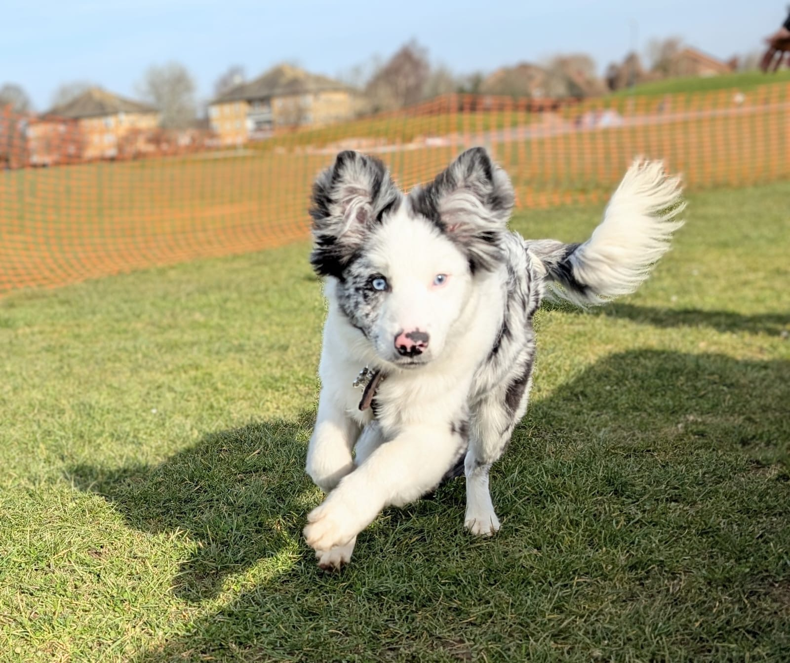

Chief Borking Officer · Border Collie · Professional Good Boy

Born: September 25, 2024 · Breed: Border Collie · Eye color: Blue (yes, BOTH) · Favourite beverage: Toilet water (still or sparkling, no preference) · Location: Wherever Xiaoqi is (or wherever sleeves are)
Specialised in strategic vocalisation during video conferences. When Xiaoqi is in a meeting, I provide unsolicited commentary (UWAAAAA). Zero meetings improved. Morale impact: devastating. Will I stop? No.
Systematically deconstructed 10+ garments, primarily targeting sleeve cuffs during meetings. Xiaoqi calls this "destroying my clothes." I call it "avant-garde fashion consulting." Portfolio available upon request.
Performed 30+ successful cotton extraction procedures. Every toy has been fully emptied of its internal organs. 100% extraction rate. Hippocratic oath not applicable (am dog).
Contracted pneumonia at 4 months old. Defeated it. Client (pneumonia) was NOT satisfied with my performance. Too bad. Undefeated record: 1-0. Key skills utilised: being TOUGH, having blue eyes that make humans cry and try harder to save you.
3 suspects identified at local park. All remain at large. I am building a case. I am VERY patient. (I am not patient. At all. About anything.)
Learned all commands on day one. Chose not to follow them. Instead, dedicated my time to a leadership role: teaching other puppies that rules are merely suggestions. Multiple classmates "corrupted." Instructor used the word "nightmare." I believe she meant "visionary."
Thesis: "Optimal Trajectory for Living Room Zoomies at 3 AM." Currently collecting data. My supervisor (Xiaoqi) has asked me to stop collecting data. I have declined.
Learning commands ★★★★★ · Following commands ★☆☆☆☆ · Focus & patience ☆☆☆☆☆ · Being cute ★★★★★ · Destroying sleeves ★★★★★ · Cotton extraction ★★★★★ · Toilet water sommelier ★★★★☆ · Corrupting other puppies ★★★★★
"Captain is... a lot." — Xiaoqi (my human, who I LOVE more than ANYTHING except maybe toilet water)
"Please do not bring him back." — Puppy Training Academy (they don't understand my GIFT)